CS 184 Final Project: Raymarching with SDFs
Xavier Plourde, Eric Zhao, Kenneth Shyle, Young-Jin Park
Final Report
Abstract
Our group worked on a relatively basic ray-marching engine which utilizes signed distance functions to create procedurally generated images. Our engine supports Phong and BSDF path-tracing rendering capabilities. Using these techniques, we created several artpieces (procedurally generated terrain, mandlebulb fractals, soft-merged objects, etc.) that would be difficult or even impossible to generate with standard mesh scene representations.
Tecnhical Apporach
Shadertoy

We used the Shadertoy website to develop a GLSL shader program to create a real time raymarching engine. We previously attempted an implementation of this by modifying the pathtracer code, but we realized that that would take longer than we'd like compared to using a much simpler platform to experiment, while being also significantly less performant. Shadertoy exposes a really simple interface and a very fast dev-loop, with compilation being nearly instantaneous and the results being apparent immediately, with relatively simple modes of interaction. This helped immensely in implementing our engine quickly, despite the fact that GLSL is arguably a less ergonomic language to develop in than C++, and that we had to reimplement some of the features of pathtracer.
One example of the kind of problems that we had to work through was poor random number generation. Unlike in C++ code, shaders don't have access to random bits. We tried a trig-based random number generation that was not quite good enough, so we found a good hash-based generator that we forward essentially everywhere and mutate for a source of entropy.
SDF and Intersections
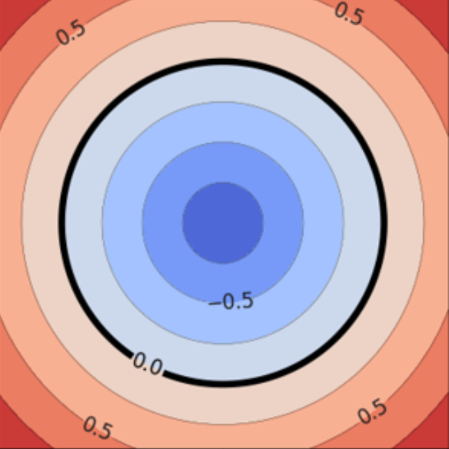Our raymarcher is made of a couple of moving parts. First is the SDF, or signed distance function. This function maps some point in 3D space to some value. We consider there to be a surface where ever the value of a certain point is equal to zero. Negative values are inside the surface, and therefore define a volume.
We defined a couple of these for primitives such as circles and boxes, as well as some combinators. For example, taking the min of a couple of sdfs is equivalent to making an SDF that is the 'merged' SDF of the individual components, kind of like adding shapes together. It's a key component in how we build scenes.
Interestingly, taking the max does the opposite, and takes the intersection of two objects. You can even take negative of an object to carve out a hole of that shape, which we do in scene3 to create a box with one side open like that in colorbox of pathtracer.

The second part is the raymarching algorithm which finds intersections in the scene. This algorithm is shockingly simple: to find an intersection, we calculate the value of the SDF of the current point in the ray. This gives us the minimum distance that a boundary is at, so we're free to travel that much forward. We can then just move forward by that amount and repeat the process, until we're at a point which is very close to zero, in which case we hit a surface.
Rendering
Phong
 |
 |
Implementing Phong was fairly simple, since it's something we've already done a couple of times in class.
One challenge is that we had to numerically calculate the normal for the surface as calculating the derivative of the SDF analytically is difficult. We used the tetrahedron based approach outlined here: https://iquilezles.org/articles/normalsSDF/
Another challenge was displaying multiple materials. SDFs don't inherently
return any information about materials, which make it difficult to create
colorful images. To get around this, we made SDFs return a
vec2 instead, where the first value is the distance value,
and the second value is the index of the material in our table.
1-bounce BSDF
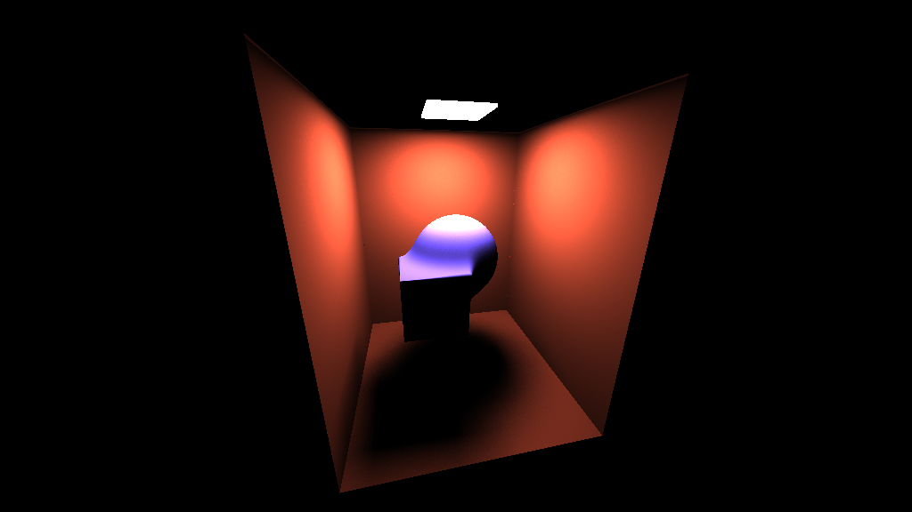N-bounce BSDF
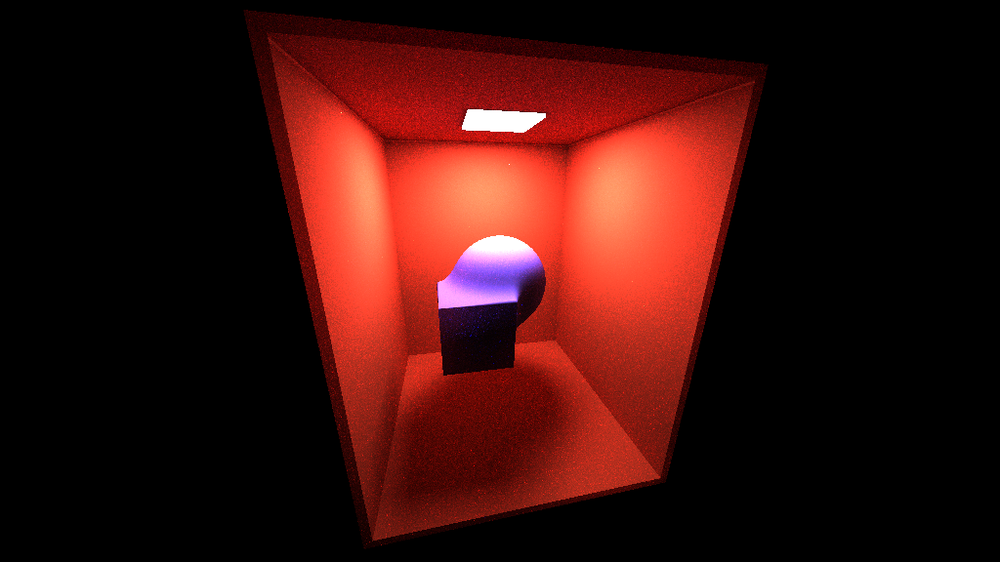Procedural Terrain
The terrain generation is done by layering multiple layers of 3D perlin noise on top of each other in a fourier fashion where the process involves taking on layer of perlin noise in 3D, rescaling its domain by a factor of 2 and its range by a factor of 1/2 and combining them in a recursive fashion. Note that we also rotate the layers by a fixed amount to create a sense of randomness found in real terrain.
The terrain generation process can be seen below:
|
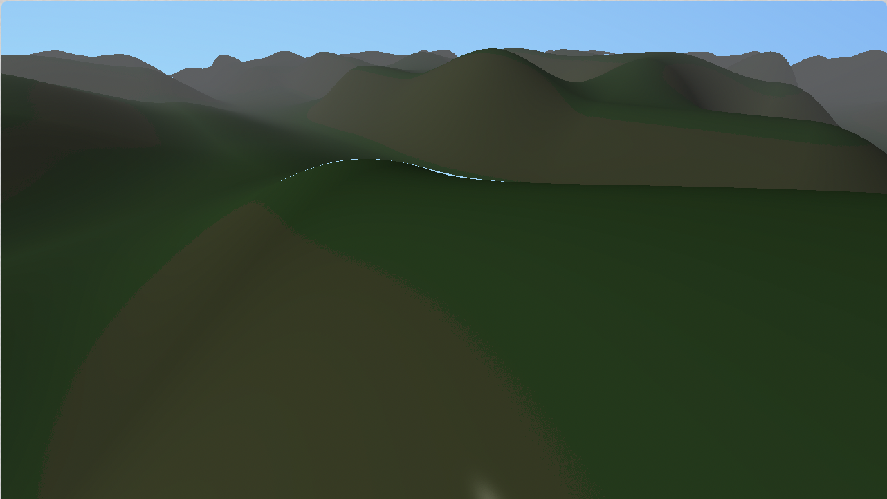
|
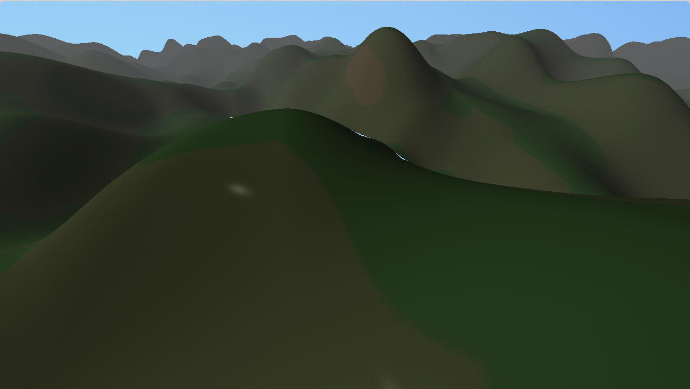
|
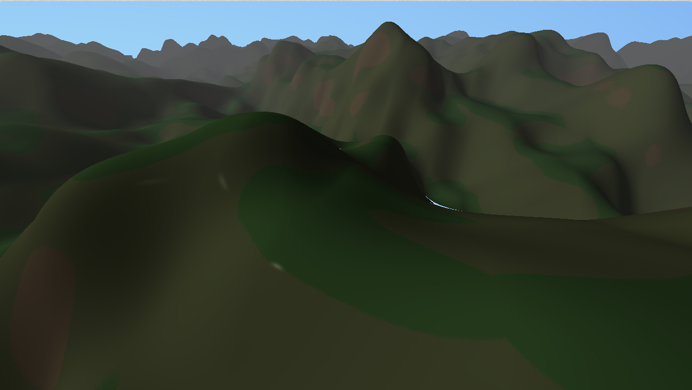
|
|
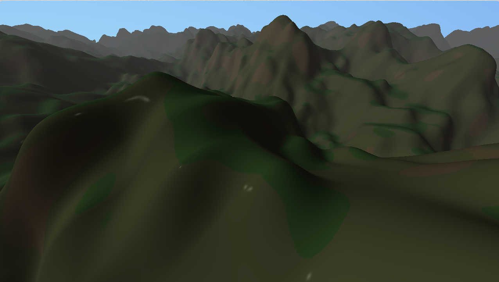
|
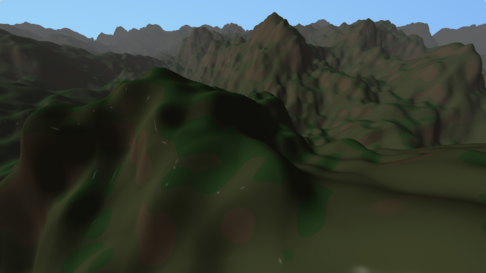
|
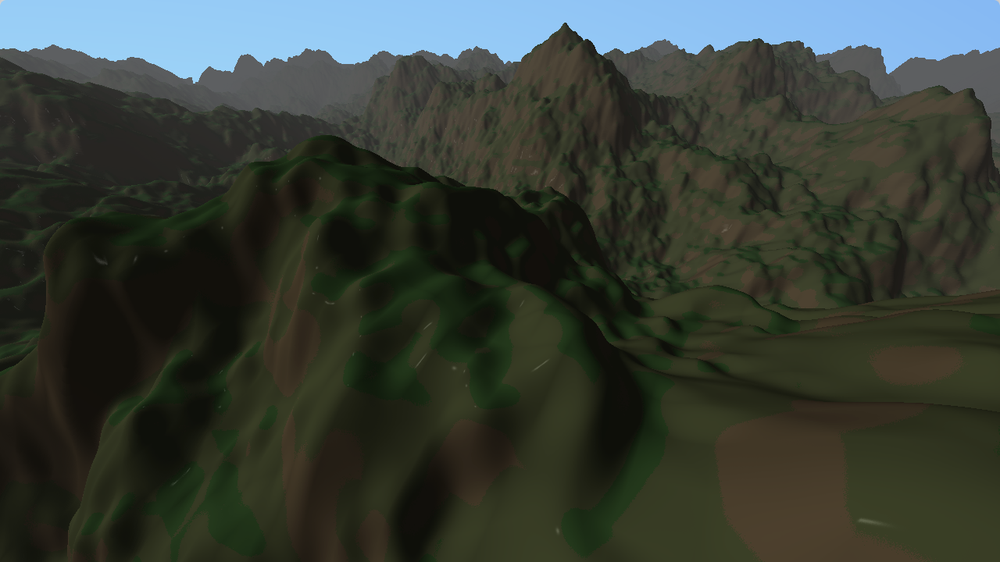
|
|
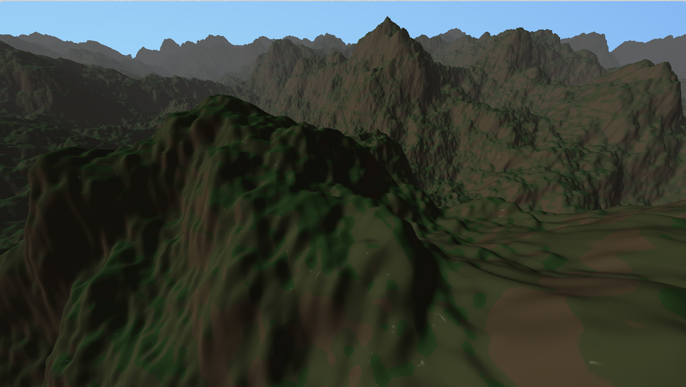
|
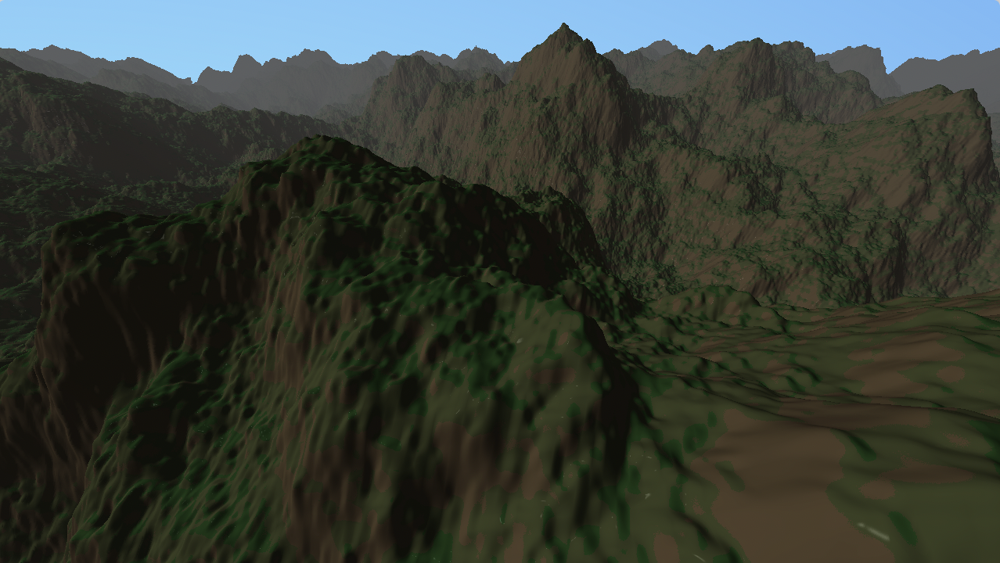
|
|
|
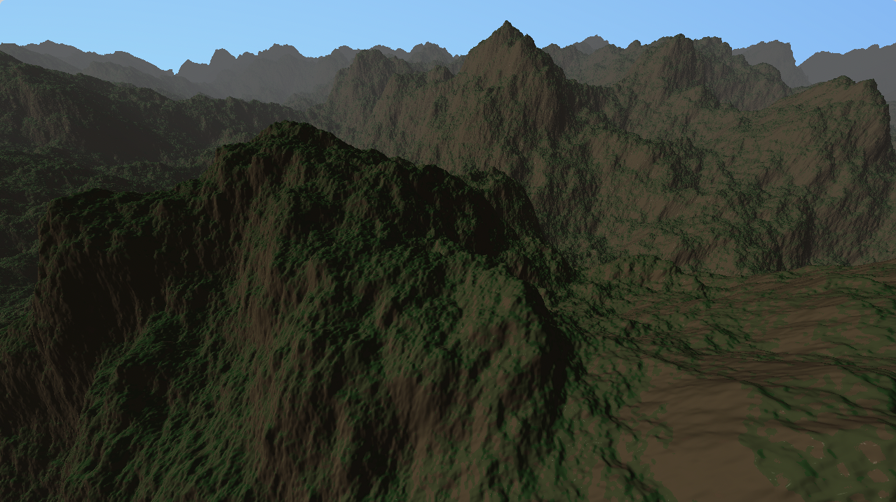
|
|
|
To implement the grass, as grass typically only grows on flatter land, we used the normal of the perlin surface to determine to whether or not to render the grass. In addition, we added atmospheric bleeding to add an illusion of distance.
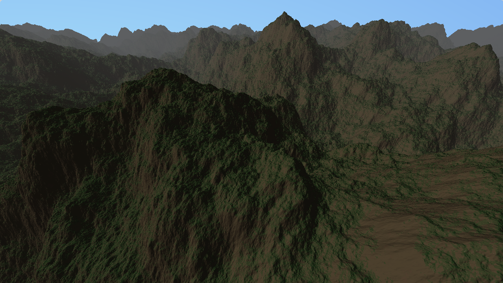The first issue that we encountered was the fact that we couldn't create a perlin noise layer all at once and had to determine an efficient way to calculate the height of he surface at any point efficiently. As such we decided to use a grid defining the point within space as anchor points to determine the part of the perlin surface we resided on. Then to create the multiple layers, instead of scaling the surface, we scaled the anchor points instead in a "reverse" fashion to backwards calculate the height of the layer we wished to calculate - ie. for layer 2 we took the point rotated it in space and scaled it up by 2 before calculating their anchor points.
Results
Mandlebulb
The "mandlebulb" is a 3D version of the mandlebrot set. What you see below is a mandlebulb rendered at various powers in real-time. Something like this would be incredibly difficult to do with meshes, but it's a tractable problem with SDFs.
Softmerge
This is a real-time render of various balls intersecting and "softmerging" with each other which is equivalent to just taking the exponent of each SDF, adding them together, then taking their log. As you can see it creates seamless shapes with ease, but doing something like this with meshes would be incredibly difficult to do robustly.
Multibounce BSDF
See here for a description of this artpiece.
Procedural Mountain Terrain
See here for a description of this artpiece.
Viral ball
This is a stimulation of a ball spiking as time passes kind of like a virus. We used simple trig operations to generate the displacement effect. With SDFs, it was super simple to describe these displacements and even animate them, but this would be quite challenging to do with meshes in a fast manner.
Solar
This is a budget solar system scene that we created. It's a basic scene showing how we could compose multiple objects together to create a solar system.
We attempted to procedurally create a texture for the sun, but we couldn't quite get it to look convincing and animate at the same time.
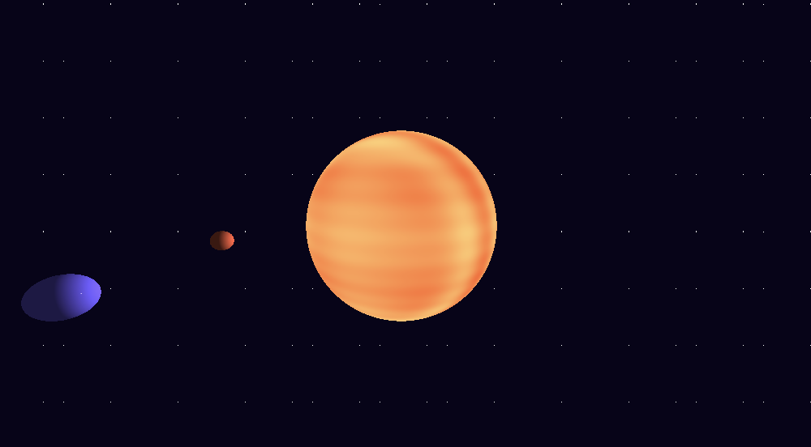Conclusions
LESSONS
References
- Ray Marching and Signed Distance Functions
- Painting a Landscape with Maths
- Coding Adventure: Ray Marching
- Fast and mostly consistent distance field ray marching
Contributions
Xavier Plourde: Implemented rendering of BSDFs, especially multi-bounce BSDFs.
Young-Jin Park: Implemented most of the engine, including SDFs, raycasting, intersections, camera, materials, Phong, and some scenes.
Eric Zhao: Implemented the galaxy and spiking ball scene. Imitated sunlight lighting on rotating balls. Experimented with other small scenes that didn't make to presentation/wesbite.
Kenneth Shyle: Implemented the bulk of the final artpiece relating to the mountainous scene. Created perlin noise sdf and terrain generation process. Implemented optimizations to the scene to improve realism including atmospheric blending and normal dependent color blending for mountainside.
Milestone
https://www.shadertoy.com/view/mltGDr
So far, we have used the Shadertoy website to develop a GLSL shader program to create a parallelized, real time raymarching engine. We attempted an implementation of this by modifying the pathtracer code, but we realized that that would take longer than we'd like compared to using a much simpler platform to experiment, while being also significantly less performant. Shadertoy exposes a really simple interface and a very fast dev-loop, with compilation being nearly instantaneous and the results being apparent immediately, with relatively simple modes of interaction. This helped immensely in implementing our engine quickly, despite the fact that GLSL is arguably a less ergonomic language to develop in than C++.
Accomplishments

Our raymarcher is made of a couple of moving parts. First is the SDF, or signed distance function. This function maps some point in 3D space to some value. We consider there to be a surface where ever the value of a certain point is equal to zero. We defined a couple of these for primitives such as circles and boxes, as well as some combinators. For example, taking the min of a couple of sdfs is equivalent to making an SDF that is the 'merged' SDF of the individual components, kind of like adding shapes together. It's a key component in how we build scenes.
Interestingly, taking the max does the opposite, and takes the intersection of two objects. You can even take negative of an object to carve out a hole of that shape, which we do in scene3 to create a box with one side open like that in colorbox of pathtracer.
The second part is the actual raymarching algorithm itself, which is shockingly simple. To find an intersection, we calculate the value of the SDF of the current point in the ray. This gives us the minimum distance that a boundary is at, so we're free to travel that much forward. We can then just move forward by that amount and repeat the process, until we're at a point which is very close to zero, in which case we hit a surface.

Finally, we have the different lighting systems, such and Phong, BSDFs with one bounce, and BSDFs with mutlibounce raytracing. We also implemented a buffer layer which collects data over multiple frames, which reduces noise significantly for scene3. Much of this is very similar to what we implemented in pathtracer.
What we found really interesting and powerful was applications like softmerge, in which we were able to display much more organic shapes very easily. An image like the one above would be far more difficult to create in a meshed-based representation of the scene, involving a lot of geometry and ingenuity, but it's trivial to do in SDFs in a manner that's far more robust as well.

It gets even crazier when we talk about rendering this like fractals. This rendering of the mandlebrot set would be incredibly difficult to do without SDFs.
Timeline
After our work, we decided that it was probably not hugely important to implement optimizations, and instead explore more into what makes raymarching and SDFs so powerful. This involves creating creative scenes with math, implementing more shaders and art primitives for interseting visual effects. Thankfully, we're not behind schedule, and got most of what we wanted to get done at this point finished.
Apr. 21th: Basic raymarching intersection (Young-Jin)
Apr. 24th: Colors, BSDFs (Xavier)
Apr. 27th: Explorations
May 1st: Artpiece (Eric/Kenneth)
Presentation
Video
Proposal
We want to create a basic raymarching engine which can handle some Signed Distance Fields as scenes. Compared to raytracing we covered in class, ray marching is less reliant on triangular meshes and instead render based on mathematical equations which makes it a very powerful tool for procedurally generated art
We plan to add more complex lighting effects and BSDFs parts to the engine, or even finding novel ways to optimize the raymarcher (datastructures, shaders) depending on how well implementing a ray marcher goes.
Finally, we will create an art piece to show off the capabilities of this engine, much like as seen in this video:
To implement the raymarcher itself, we found a couple of resources such as this blog article and this video below
Timeline
Apr. 21th: Basic raymarching intersection (Young-Jin)
Apr. 24th: Colors, BSDFs (Xavier)
Apr. 27th: Optimizations
May 1st: Artpiece